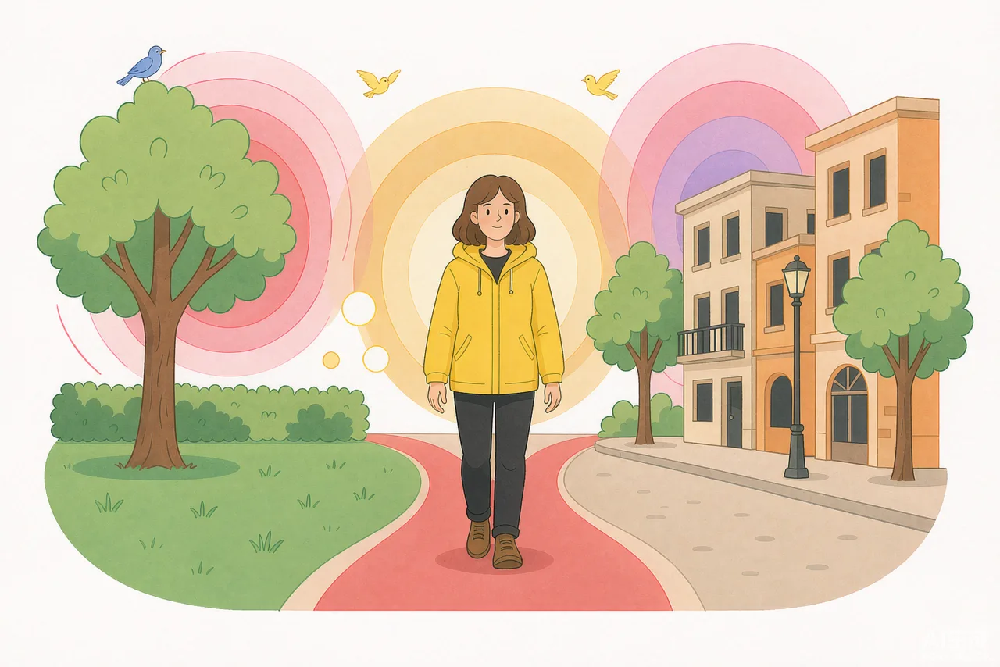

环境知觉与认知地图
研究个体如何获取、组织与使用空间信息，探讨寻路困难、空间表征与熟悉度对环境行为的影响。人们在陌生建筑中常依赖标志物与路径线索形成认知地图，布局混乱会增加迷路与焦虑，清晰的空间结构能降低寻路负担。
应用心理学 · DISCIPLINE
Environmental Psychology
研究人与物理环境之间的相互作用
环境心理学探讨物理环境与人的心理、行为之间的双向关系，关注空间布局、噪声、光照、拥挤、自然接触与场所依恋对情绪、认知和社会行为的影响。它结合现场研究、实验与自然观察，分析环境压力、个人空间、领域性与环境知觉，并将结果用于建筑设计、社区规划与可持续发展。例如，长期处于高噪声且缺乏绿地的居住环境，可能与注意力疲劳和休息质量下降相关；而可达的绿地常被视为恢复性环境。研究强调情境整体性与生态效度，避免把环境影响简单归因于单一因素。其价值在于为空间设计提供依据，让环境更好地支持人的健康与交往。

这个分支主要研究什么
研究个体如何获取、组织与使用空间信息，探讨寻路困难、空间表征与熟悉度对环境行为的影响。人们在陌生建筑中常依赖标志物与路径线索形成认知地图，布局混乱会增加迷路与焦虑，清晰的空间结构能降低寻路负担。
分析噪声、拥挤、高温与空气污染等应激源的效应，关注适应、控制感与个体差异在其中的调节作用。研究发现可预测的噪声比突然出现的噪声更易适应，而缺乏控制感会放大压力反应。
探讨人际距离、座次选择与领地标记等空间行为，说明文化规范与情境目标对空间使用的影响。例如图书馆中人们倾向选择靠墙或角落座位，通过背包占位标记临时领域，以减少被打扰。
研究绿色空间与自然环境对注意恢复和情绪状态的促进作用，讨论接触方式、时长与可达性的差异。注意力恢复理论认为自然的柔和吸引力让定向注意得以休息，短时散步也可能带来状态改善。
关注人与居住场所之间的情感联结及其对归属、迁移适应与环境行为的影响，重视社区尺度分析。长期居住形成的熟悉感与邻里关系会让居民更愿意维护公共空间，迁移则可能带来失落与重建过程。
这一分支能带来什么
学习环境心理学能让你意识到情绪与行为受到空间、噪声和绿地的持续影响，而不只取决于个人性格。你会更善于分析环境压力来源，也能在居住、办公与公共空间设计中提出更贴近使用者需要的建议。
一项奠定了这个领域的研究
20世纪80年代起，卡普兰夫妇提出注意力恢复理论，认为城市生活中的定向注意容易疲劳，而自然环境中的柔和吸引力能让注意系统得到休息。他们通过环境偏好研究与实地观察比较自然和城市场景，发现接触绿地与恢复感、情绪改善相关。该理论被广泛用于城市绿地规划、校园与医疗环境设计，也为自然剂量类研究提供框架。后续研究继续检验因果证据，并讨论绿地可达性与社会公平问题。
还没定论的问题，往往最值得追问
相关研究显示绿地与心理健康相关，但反向因果与混杂因素难以排除：状态好的人可能更愿意去绿地。争论围绕自然实验与纵向研究的证据强度，以及多大剂量、何种质量的绿地才有效。
许多环境行为研究来自特定国家和城市，结论未必适用于不同气候、密度与文化规范。争论集中在个人空间与场所依恋的普遍性，以及如何避免把局部发现当作普适设计标准。
把概念带回日常观察
在安全可行的情况下，选择一段有树木或安静角落的路线步行十分钟，前后各用一句话记录注意力和心情。比较两次记录的差别，留意环境特征而非给自己下结论。仅作自我观察，不构成诊断或治疗建议。
怎么研究，用在哪里
进入这个分支的术语入口
与这一领域密切相关的名字
研究人际距离与文化差异，开创空间行为与近身距离学研究。
研究个人空间与领域性，推动环境行为学的实验研究取向。